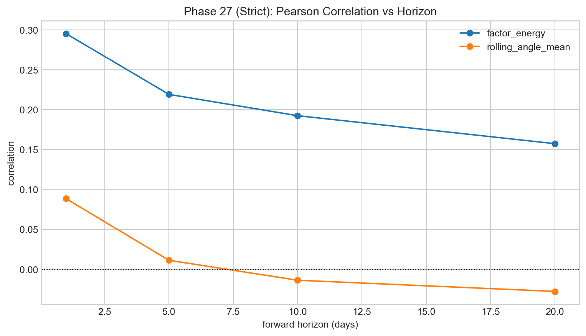
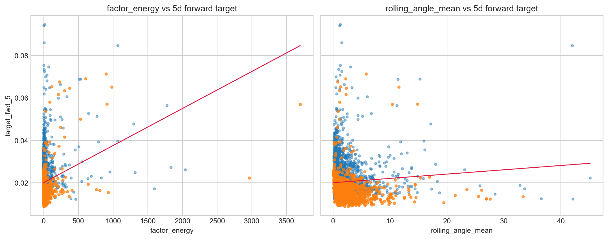
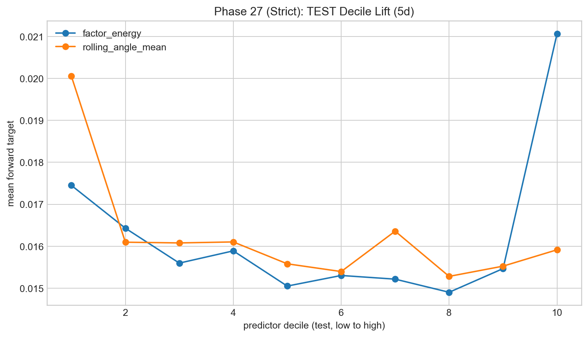

Predictive Power Strict
This post reports strict-causality predictive results with timing integrity prioritized over cosmetic in-sample fit.
The strict setup enforces forward-only targets and walk-forward PCA so each timestamp uses only information available at that point. Event thresholds are fit on train data and applied unchanged to test data. This usually reduces headline fit, but it produces materially more credible evaluation.
What survived strict setup
Event classification remains strong for factor energy, with test AUC peaking near 0.90 around the 10-day horizon. Linear out-of-sample magnitude regression remains weak (negative R²). The interpretation is clear: ranking extreme-risk likelihood works better than point-value prediction in this feature/model class.
The figure set below shows legacy-to-strict transition, horizon sensitivity, and calibration-style views (scatter and decile lift).






Metrics captured from report files
- aligned rows around 5,081 in strict predictive dataset
- best strict AUC test ≈ 0.9007 (factor energy, 10-day)
- best strict test R² ≈ -0.313 (linear magnitude fit remains weak)
- train/test event shares differ, so naive threshold transfer assumptions are avoided
How this is interpreted without over-selling
The model is stronger at identifying elevated event risk than estimating exact forward volatility magnitude. In practical terms, this supports triage and alerting workflows more than precision point forecasting.
Shared reference
Dictionary: same terminology map used across all pages.